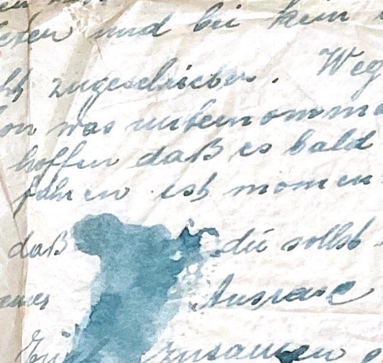

Letter-39 blot · drag the slider to sweep through shade bands

Accumulate: slider at k shows bands 0–k stacked, like the composite. Window: only the trailing w bands stay visible, so you can isolate a narrow shade slice and drag it across the range. Depth colors each band by its shade level, matching the depthmap.